전기기사 (2019-03-03 기출문제)
1과목: 전기자기학
1. 평행판 콘덴서에 어떤 유전체를 넣었을 때 전속밀도가 2.4 × 10-7C/m2이고, 단위 체적중의 에너지가 5.3 × 10-3J/m3이었다. 이 유전체의 유전율은 약 몇 F/m인가?
- 2.17 × 10-11
- 5.43 × 10-11
- 5.17 × 10-12
- 5.43 × 10-12
(정답률: 73%)

2. 서로 다른 두 유전체사이의 경계면에 전하분포에 없다면 경계면 양쪽에서의 전계 및 전속밀도는?
- 전계 및 전속밀도의 접선성분은 서로 같다.
- 전계 및 전속밀도의 법선성분은 서로 같다.
- 전계의 법선성분이 서로 같고, 전속밀도의 접선성분이 서로 같다.
- 전계의 접선성분이 서로 같고, 전속밀도의 법선성분이 서로 같다.
(정답률: 74%)
3. 와류손에 대한 설명으로 틀린 것은? (단, f : 주파수, Bm : 최대자속밀도, t : 두께, ρ : 저항률이다.)
- t2 에 비례한다.
- f2 에 비례한다.
- ρ2 에 비례한다.
- B2m에 비례한다.
(정답률: 72%)
4. x ＞ 0인 영역에 비유전율 εr1=3인 유전체, x ＜ 0인 영역에 비유전율 εr2=5인 유전체가 있다. x ＜ 0 인 영역에서 전계 E2 = 20ax + 30ay-40az V/m일 때 x ＞ 0 인 영역에서의 전속밀도는 몇 C/m2 인가?
- 10(10ax+9ay-12az)ε0
- 20(5ax-10ay+6az)ε0
- 50(2ax+ay-4az)ε0
- 50(2ax-3ay+4az)ε0
(정답률: 61%)
5. q(C)의 전하가 진공 중에서 v(m/s)의 속도로 운동하고 있을 때, 이 운동방향과 θ의 각으로 r(m) 떨어진 점의 자계의 세기(AT/m)는?
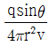
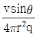
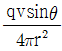
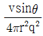
(정답률: 76%)
6. 원형 선전류 I(A)의 중심축상 점 P의 자위(A)를 나타내는 식은? (단, θ는 점 P에서 원형전류를 바라보는 평면각이다.)
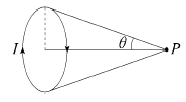
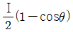
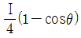
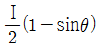
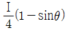
(정답률: 67%)
7. 진공 중에서 무한장 직선도체에 선전하밀도 ρL=2π × 10-3C/m가 균일하게 분포된 경우 직선도체에서 2m와 4m떨어진 두 점사이의 전위차는 몇 V 인가?
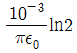
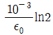
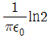
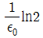
(정답률: 71%)
8. 균일한 자장 내에 놓여 있는 직선도선에 전류 및 길이를 각각 2배로 하면 이 도선에 작용하는 힘은 몇 배가 되는가?
- 1
- 2
- 4
- 8
(정답률: 64%)
9. 환상철심에 권수 3000회 A코일과 권수 200회 B코일이 감겨져 있다. A코일의 자기인덕턴스가 360mH일 때 A, B 두 코일의 상호 인덕턴스는 몇 mH 인가? (단, 결합계수는 1이다.)
- 16
- 24
- 36
- 72
(정답률: 76%)
10. 맥스웰방정식 중 틀린 것은?
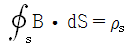
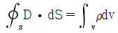
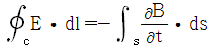
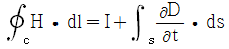
(정답률: 60%)
11. 자기회로의 자기저항에 대한 설명으로 옳은 것은?
- 투자율에 반비례한다.
- 자기회로의 단면적에 비례한다.
- 자기회로의 길이에 반비례한다.
- 단면적에 반비례하고, 길이의 제곱에 비례한다.
(정답률: 70%)
12. 접지된 구도체와 점전하 간에 작용하는 힘은?
- 항상 흡인력이다.
- 항상 반발력이다.
- 조건적 흡인력이다.
- 조건적 반발력이다.
(정답률: 82%)
13. 그림과 같이 전류가 흐르는 반원형 도선이 평면 Z=0 상에 놓여 있다. 이 도선이 자속밀도 B = 0.6ax - 0.5ay + az(Wb/m2)인 균일 자계 내에 놓여 있을 때 도선의 직선 부분에 작용하는 힘(N)은?
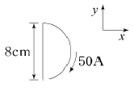
- 4ax + 2.4az
- 4ax - 2.4az
- 5ax - 3.5az
- -5ax + 3.5az
(정답률: 53%)
14. 평행한 두 도선간의 전자력은? (단, 두 도선간의 거리는 r(m)라 한다.)
- r에 비례
- r2에 비례
- r에 반비례
- r2에 반비례
(정답률: 56%)
15. 다음의 관계식 중 성립할 수 없는 것은? (단, μ는 투자율,
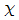
는 자화율, μ0는 진공의 투자율, J는 자화의 세기이다.)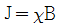
- B = μH
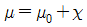
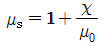
(정답률: 75%)
16. 평행판 콘덴서의 극판 사이에 유전율 ε, 저항률 ρ인 유전체를 삽입하였을 때, 두 전극간의 저항 R과 정전용량 C의 관계는?
- R = ρεC
- RC = ε / ρ
- RC = ρε
- RCρε = 1
(정답률: 84%)
17. 비투자율 μs=1, 비유전율 εs=90인 매질 내의 고유임피던스는 약 몇 Ω 인가?
- 32.5
- 39.7
- 42.3
- 45.6
(정답률: 75%)
18. 사이클로트론에서 양자가 매초 3×1015 개의 비율로 가속되어 나오고 있다. 양자가 15MeV의 에너지를 가지고 있다고 할 때, 이 사이클로트론은 가속용 고주파 전계를 만들기 위해서 150kW의 전력을 필요로 한다면 에너지 효율(%)은?
- 2.8
- 3.8
- 4.8
- 5.8
(정답률: 50%)
19. 단면적 4cm2의 철심에 6×10-4Wb의 자속을 통하게 하려면 2800AT/m의 자계가 필요하다. 이 철심의 비투자율은 약 얼마인가?
- 346
- 375
- 407
- 426
(정답률: 66%)
20. 대전된 도체의 특징으로 틀린 것은?
- 가우스정리에 의해 내부에는 전하가 존재한다.
- 전계는 도체 표면에 수직인 방향으로 진행된다.
- 도체에 인가된 전하는 도체 표면에만 분포한다.
- 도체 표면에서의 전하밀도는 곡률이 클수록 높다.
(정답률: 73%)
2과목: 전력공학
21. 송배전 선로에서 도체의 굵기는 같게 하고 도체간의 간격을 크게 하면 도체의 인덕턴스는?
- 커진다.
- 작아진다.
- 변함이 없다.
- 도체의 굵기 및 도체간의 간격과는 무관하다.
(정답률: 58%)
22. 동일전력을 동일 선간전압, 동일역률로 동일거리에 보낼 때 사용하는 전선의 총중량이 같으면 3상 3선식인 때와 단상 2선식일 때는 전력손실비는?
- 1
- 3/4
- 2/3
- 1/√3
(정답률: 57%)
23. 배전반에 접속되어 운전 중인 계기용 변압기(PT) 및 변류기(CT)의 2차측 회로를 점검할 때 조치사항으로 옳은 것은?
- CT만 단락시킨다.
- PT만 단락시킨다.
- CT와 PT 모두를 단락시킨다.
- CT와 PT 모두를 개방시킨다.
(정답률: 70%)
24. 배전선로의 역률 개선에 따른 효과로 적합하지 않은 것은?
- 선로의 전력손실 경감
- 선로의 전압강하의 감소
- 전원측 설비의 이용률 향상
- 선로 절연의 비용 절감
(정답률: 60%)
25. 총 낙차 300m, 사용수량 20m3/s인 수력발전소의 발전기출력은 약 몇 kW 인가? (단, 수차 및 발전기효율은 각각 90%, 98%라하고, 손실낙차는 총 낙차의 6%라고 한다.)
- 48750
- 51860
- 54170
- 54970
(정답률: 60%)
26. 수전단을 단락한 경우 송전단에서 본 임퍼던스가 330Ω이고, 수전단을 개방한 경우 송전단에서 본 어드미턴스가 1.875×10-3℧일 때 송전단의 특성임피던스는 약 몇 Ω인가?
- 120
- 220
- 320
- 420
(정답률: 70%)
27. 다중접지 계통에 사용되는 재폐로 기능을 갖는 일종의 차단기로서 과부하 또는 고장전류가 흐르면 순시동작하고, 일정시간 후에는 자동적으로 재폐로 하는 보호기기는?
- 라인퓨즈
- 리클로저
- 섹셔널라이저
- 고장구간 자동개폐기
(정답률: 55%)
28. 송전선 중간에 전원이 없을 경우에 송전단의 전압 ES=AER+BIR이 된다. 수전단의 전압 ER의 식으로 옳은 것은? (단, IS, IR는 송전단 및 수전단의 전류이다.)
- ER = AES + CIS
- ER = BES + AIS
- ER = DES - BIS
- ER = CES - DIS
(정답률: 54%)
29. 비접지식 3상 송배전계통에서 1선 지락고장 시 고장전류를 계산하는데 사용되는 정전용량은?
- 작용정전용량
- 대지정전용량
- 합성정전용량
- 선간정전용량
(정답률: 70%)
30. 비접지 계통의 지락사고 시 계전기에 영상전류를 공급하기 위하여 설치하는 기기는?
- PT
- CT
- ZCT
- GPT
(정답률: 82%)
31. 이상전압의 파고값을 저감시켜 전력사용설비를 보호하기 위하여 설치하는 것은?
- 초호환
- 피뢰기
- 계전기
- 접지봉
(정답률: 79%)
32. 임피던스 Z1, Z2 및 Z3 을 그림과 같이 접속한 선로의 A쪽에서 전압파 E가 진행해 왔을 때 접속점 B에서 무반사로 되기 위한 조건은?
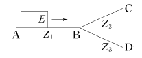
- Z1 = Z2 + Z3
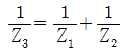
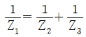
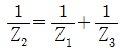
(정답률: 80%)
33. 저압뱅킹방식에서 저전압의 고장에 의하여 건전한 변압기의 일부 또는 전부가 차단되는 현상은?
- 아킹(Arcing)
- 플리커(Flicker)
- 밸런스(Balance)
- 캐스케이딩(Cascading)
(정답률: 80%)
34. 변전소의 가스차단기에 대한 설명으로 틀린 것은?
- 근거리 차단에 유리하지 못하다.
- 불연성이므로 화재의 위험성이 적다.
- 특고압 계통의 차단기로 많이 사용된다.
- 이상전압의 발생이 적고, 절연회복이 우수하다.
(정답률: 74%)
35. 켈빈(Kelvin)의 법칙이 적용되는 경우는?
- 전압 강하를 감소시키고자 하는 경우
- 부하 배분의 균형을 얻고자 하는 경우
- 전력 손실량을 축소시키고자 하는 경우
- 경제적인 전선의 굵기를 선정하고자 하는 경우
(정답률: 79%)
36. 보호계전기의 반한시 ㆍ 정한시 특성은?
- 동작전류가 커질수록 동작시간이 짧게 되는 특성
- 최소 동작전류 이상의 전류가 흐르면 즉시 동작하는 특성
- 동작전류의 크기에 관계없이 일정한 시간에 동작하는 특성
- 동작전류가 커질수록 동작시간이 짧아지며, 어떤 전류이상이 되면 동작전류의 크기에 관계없이 일정한 시간에서 동작하는 특성
(정답률: 82%)
37. 단도체 방식과 비교할 때 복도체 방식의 특징이 아닌 것은?
- 안정도가 증가된다.
- 인덕턴스가 감소된다.
- 송전용량이 증가된다.
- 코로나 임계전압이 감소된다.
(정답률: 77%)
38. 1선 지락 시에 지락전류가 가장 작은 송전계통은?
- 비접지식
- 직접접지식
- 저항접지식
- 소호리액터접지식
(정답률: 70%)
39. 수차의 캐비테이션 방지책으로 틀린 것은?
- 흡출수두를 증대시킨다.
- 과부화 운전을 가능한 한 피한다.
- 수차의 비속도를 너무 크게 잡지 않는다.
- 침식에 강한 금속재료로 러너를 제작한다.
(정답률: 68%)
40. 선간전압이 154kV이고, 1상당의 임피던스가 j8Ω인 기기가 있을 때, 기준용량을 100MVA로 하면 % 임피던스는 약 몇 %인가?
- 2.75
- 3.15
- 3.37
- 4.25
(정답률: 70%)
3과목: 전기기기
41. 3상 비돌극형 동기발전기가 있다. 정격출력 5000kVA, 정격전압 6000V, 정격역률 0.8이다. 여자를 정격상태로 유지할 때 이 발전기의 최대출력은 약 몇 kW 인가? (단, 1상의 동기리액턴스는 0.8P.U이며 저항은 무시한다.)
- 7500
- 10000
- 11500
- 12500
(정답률: 38%)
42. 직류기의 손실 중에서 기계손으로 옳은 것은?
- 풍손
- 와류손
- 표류 부하손
- 브러시의 전기손
(정답률: 66%)
43. 다음 ( )에 알맞은 것은?
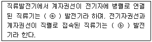
- ⓐ 분권, ⓑ 직권
- ⓐ 직권, ⓑ 분권
- ⓐ 복권, ⓑ 분권
- ⓐ 자여자, ⓑ 타여자
(정답률: 78%)
44. 1차 전압 6600V, 2차 전압 220V, 주파수 60Hz, 1차 권수 1200회인 경우 변압기의 최대 자속(Wb)은?
- 0.36
- 0.63
- 0.012
- 0.021
(정답률: 60%)
45. 직류발전기의 정류 초기에 전류변화가 크며 이때 발생되는 불꽃정류로 옳은 것은?
- 과정류
- 직선정류
- 부족정류
- 정현파정류
(정답률: 71%)
46. 3상 유도전동기의 속도제어법으로 틀린 것은?
- 1차 저항법
- 극수 제어법
- 전압 제어법
- 주파수 제어법
(정답률: 59%)
47. 60Hz 의 변압기에 50Hz 의 동일전압을 가했을 때의 자속밀도는 60Hz 때와 비교하였을 경우 어떻게 되는가?
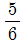
로 감소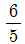
으로 증가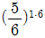
로 감소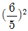
으로 증가
(정답률: 58%)
48. 2대의 변압기로 V결선하여 3상 변압하는 경우 변압기 이용률은 약 몇 % 인가?
- 57.8
- 66.6
- 86.6
- 100
(정답률: 71%)
49. 3상 유도전동기의 기동법 중 전전압 기동에 대한 설명으로 틀린 것은?
- 기동 시에 역률이 좋지 않다.
- 소용량으로 기동 시간이 길다.
- 소용량 농형 전동기의 기동법이다.
- 전동기 단자에 직접 정격전압을 가한다.
(정답률: 54%)
50. 동기발전기의 전기자 권선법 중 집중권인 경우 매극 매상의 홈(slot) 수는?
- 1개
- 2개
- 3개
- 4개
(정답률: 57%)
51. 유도전동기의 속도제어를 인버터방식으로 사용하는 경우 1차 주파수에 비례하여 1차 전압을 공급하는 이유는?
- 역률을 제어하기 위해
- 슬립을 증가시키기 위해
- 자속을 일정하게 하기 위해
- 발생토크를 증가시키기 위해
(정답률: 55%)
52. 3상 유도전압조정기의 원리를 응용한 것은?
- 3상 변압기
- 3상 유도전동기
- 3상 동기발전기
- 3상 교류자전동기
(정답률: 69%)
53. 정류회로에서 상의 수를 크게 했을 경우 옳은 것은?
- 맥동 주파수와 맥동률이 증가한다.
- 맥동률과 맥동 주파수가 감소한다.
- 맥동 주파수는 증가하고 맥동률은 감소한다.
- 맥동률과 주파수는 감소하나 출력이 증가한다.
(정답률: 65%)
54. 동기전동기의 위상특성곡선(V곡선)에 대한 설명으로 옳은 것은?
- 출력을 일정하게 유지할 때 부하전류와 전기자전류의 관계를 나타낸 곡선
- 역률을 일정하게 유지할 때 계자전류와 전기자전류의 관계를 나타낸 곡선
- 계자전류를 일정하게 유지할 때 전기자전류와 출력사이의 관계를 나타낸 곡선
- 공급전압 V와 부하가 일정할 때 계자전류의 변화에 대한 전기자전류의 변화를 나타낸 곡선
(정답률: 62%)
55. 유도전동기의 기동 시 공급하는 전압을 단권변압기에 의해서 일시 강하시켜서 기동전류를 제한하는 기동방법은?
- Y-Δ기동
- 저항기동
- 직접기동
- 기동 보상기에 의한 기동
(정답률: 59%)
56. 그림과 같은 회로에서 V(전원전압의 실효치)=100V, 점호각 a = 30°인 때의 부하 시의 직류전압 Eda(V)는 약 얼마인가? (단, 전류가 연속하는 경우이다.)
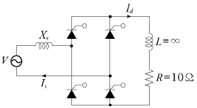
- 90
- 86
- 77.9
- 100
(정답률: 46%)
57. 직류 분권전동기가 전기자 전류 100A일 때 50kgㆍm의 토크를 발생하고 있다. 부하가 증가하여 전기자 전류가 120A로 되었다면 발생 토크(kg ㆍ m)는 얼마인가?
- 60
- 67
- 88
- 160
(정답률: 70%)
58. 비례추이와 관계있는 전동기로 옳은 것은?
- 동기전동기
- 농형 유도전동기
- 단상정류자전동기
- 권선형 유도전동기
(정답률: 67%)
59. 동기발전기의 단락비가 적을 때의 설명으로 옳은 것은?
- 동기 임피던스가 크고 전기자 반작용이 작다.
- 동기 임피던스가 크고 전기자 반작용이 크다.
- 동기 임피던스가 작고 전기자 반작용이 작다.
- 동기 임피던스가 작고 전기자 반작용이 크다.
(정답률: 52%)
60. 3/4 부하에서 효율이 최대인 주상변압기의 전부하 시 철손과 동손의 비는?
- 8 : 4
- 4 : 4
- 9 : 16
- 16 : 9
(정답률: 69%)
4과목: 회로이론 및 제어공학
61. 다음의 신호 흐름 선도를 메이슨의 공식을 이용하여 전달함수를 구하고자 한다. 이 신호흐름 선도에서 루프(Loop)는 몇 개 인가?
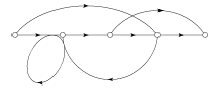
- 0
- 1
- 2
- 3
(정답률: 70%)
62. 특성 방정식 중에서 안정된 시스템인 것은?
- 2s3 + 3s2 + 4s + 5 = 0
- s4 + 3s3 - s2 + s + 10 = 0
- s5 + s3 + 2s2 + 4s + 3 = 0
- s4 - 2s3 - 3s2 + 4s + 5 = 0
(정답률: 75%)
63. 타이머에서 입력신호가 주어지면 바로 동작하고, 입력신호가 차단된 후에는 일정시간이 지난 후에 출력이 소멸되는 동작형태는?
- 한시동작 순시복귀
- 순시동작 순시복귀
- 한시동작 한시복귀
- 순시동작 한시복귀
(정답률: 74%)
64. 단위궤환 제어시스템의 전향경로 전달함수가
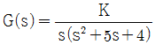
일 때, 이 시스템이 안정하기 위한 K의 범위는?- K ＜ -20
- -20 ＜ K ＜ 0
- 0 ＜ K ＜ 20
- 20 ＜ K
(정답률: 71%)
65.
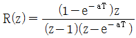
의 역변환은?- teaT
- te-aT
- 1-e-aT
- 1+e-aT
(정답률: 53%)
66. 시간영역에서 자동제어계를 해석할 때 기본 시험입력에 보통 사용되지 않는 입력은?
- 정속도 입력
- 정현파 입력
- 단위계단 입력
- 정가속도 입력
(정답률: 58%)
67.
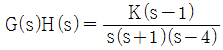
에서 점근선의 교차점을 구하면?- -1
- 0
- 1
- 2
(정답률: 62%)
68. n차 선형 시불변 시스템의 상태방정식을
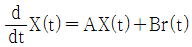
로 표시할 때 상태천이 행렬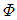
(n×n행렬)에 관하여 틀린 것은?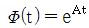
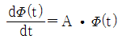
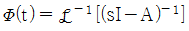
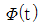
는 시스템의 정상상태응답을 나타낸다.
(정답률: 51%)
69. 다음의 신호 흐름 선도에서 C/R는?
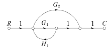
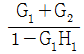
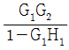
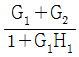
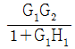
(정답률: 67%)
70. PD 조절기와 전달함수 G(s)=1.2+0.02s 의 영점은?
- -60
- -50
- 50
- 60
(정답률: 64%)
71. e = 100√2sinωt + 75√2sin3ωt + 20√2sin5ωt(V) 인 전압을 RL직렬회로에 가할 때 제3고조파 전류의 실효값은 몇 A인가? (단, R = 4Ω, ωL = 1Ω이다.)
- 15
- 15√2
- 20
- 20√2
(정답률: 64%)
72. 전원과 부하가 Δ결선된 3상 평형회로가 있다. 전원전압이 200V, 부하 1상의 임피던스가 6+j8(Ω) 일 때 선전류(A)는?
- 20
- 20√3
- 20 / √3
- √3 / 20
(정답률: 61%)
73. 분포정수 선로에서 무왜형 조건이 성립하면 어떻게 되는가?
- 감쇠량이 최소로 된다.
- 전파속도가 최대로 된다.
- 감쇠량은 주파수에 비례한다.
- 위상정수가 주파수에 관계없이 일정하다.
(정답률: 48%)
74. 회로에서 V = 10V, R = 10Ω, L =1H, C = 10μF 그리고 VC(0) = 0 일 때 스위치 K를 닫은 직후 전류의 변화율
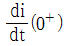
의 값(A/sec)은?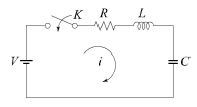
- 0
- 1
- 5
- 10
(정답률: 36%)
75.
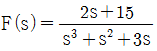
일 때 f(t)의 최종값은?- 2
- 3
- 5
- 15
(정답률: 73%)
76. 대칭 5상 교류 성형결선에서 선간전압과 상전압 간의 위상차는 몇 도인가?
- 27°
- 36°
- 54°
- 72°
(정답률: 57%)
77. 정현파 교류 V = Vmsinωt 의 전압을 반파정류하였을 때의 실효값은 몇 V인가?
- Vm / √2
- Vm / 2
- Vm / 2√2
- √2Vm
(정답률: 59%)
78. 회로망 출력단자 a-b에서 바라본 등가 임피던스는? (단, V1=6V, V2=3V, I1=10A, R1=15Ω, R2=10Ω, L=2H, jω=s 이다.)
- s + 15
- 2s + 6
(정답률: 58%)
79. 대칭 상 전압이 a상 Va, b상 Vb=a2Va, c상 Vc=aVa일 때 a상을 기준으로 한 대칭분 전압 중 정상분 V1(V)은 어떻게 표시되는가?
- Va
- Va
- aVa
- a2Va
(정답률: 53%)
80. 다음과 같은 비정현파 기전력 및 전류에 의한 평균전력을 구하면 몇 W 인가?
- 825
- 875
- 925
- 1175
(정답률: 53%)
5과목: 전기설비기술기준 및 판단기준
81. 지중 전선로의 매설방법이 아닌 것은?
- 관로식
- 인입식
- 암거식
- 직접 매설식
(정답률: 65%)
82. 특고압용 변압기로서 그 내부에 고장이 생긴 경우에 반드시 자동 차단되어야 하는 변압기의 뱅크용량은 몇 kVA 이상인가?
- 5000
- 10000
- 50000
- 100000
(정답률: 60%)
83. 옥내에 시설하는 관등회로의 사용전압이 12000V인 방전등 공사 시의 네온변압기 외함에는 몇 종 접지공사를 해야 하는가?(관련 규정 개정전 문제로 여기서는 기존 정답인 3번을 누르면 정답 처리됩니다. 자세한 내용은 해설을 참고하세요.)
- 제1종 접지공사
- 제2종 접지공사
- 제3종 접지공사
- 특별 제3종 접지공사
(정답률: 54%)
84. 전력보안 가공통신선(광섬유 케이블은 제외)을 조가 할 경우 조가용 선은?
- 금속으로 된 단선
- 강심 알루미늄 연선
- 금속선으로 된 연선
- 알루미늄으로 된 단선
(정답률: 42%)
85. 특고압 전선로의 철탑의 가장 높은 곳에 220V용 항공 장애등을 설치하였다. 이 등기구의 급속제 외함은 몇 종 접지공사를 하여야 하는가?(관련 규정 개정전 문제로 여기서는 기존 정답인 1번을 누르면 정답 처리됩니다. 자세한 내용은 해설을 참고하세요.)
- 제1종 접지공사
- 제2종 접지공사
- 제3종 접지공사
- 특별 제3종 접지공사
(정답률: 55%)
86. 저고압 가공전선과 가공약전류 전선 등을 동일 지지물에 시설하는 기준으로 틀린 것은?
- 가공전선을 가공약전류전선 등의 위로하고 별개의 완금류에 시설할 것
- 전선로의 지지물로서 사용하는 목주의 풍압하중에 대한 안전율은 1.5 이상일 것
- 가공전선과 가공약전류전선 등 사이의 이격거리는 저압과 고압 모두 75cm 이상일 것
- 가공전선이 가공약전류전선에 대하여 유도작용에 의한 통신상의 장해를 줄 우려가 있는 경우에는 가공전선을 적당한 거리에서 연가 할 것
(정답률: 59%)
87. 풀용 수중조명등에 사용되는 절연 변압기의 2차측 전로의 사용전압이 몇 V를 초과하는 경우에는 그 전로에 지락이 생겼을 때에 자동적으로 전로를 차단하는 장치를 하여야 하는가?
- 30
- 60
- 150
- 300
(정답률: 42%)
88. 석유류를 저장하는 장소의 전등배선에 사용하지 않는 공사방법은?
- 케이블 공사
- 금속관 공사
- 애자사용 공사
- 합성수지관 공사
(정답률: 55%)
89. 사용전압이 154kV인 가공 송전선의 시설에서 전선과 식물과의 이격거리는 일반적인 경우에 몇 m 이상으로 하여야 하는가?
- 2.8
- 3.2
- 3.6
- 4.2
(정답률: 49%)
90. 과전류차단기로 저압전로에 사용하는 퓨즈를 수평으로 붙인 경우 이 퓨즈는 정격전류의 몇 배의 전류에 견딜 수 있어야 하는가?(관련 규정 개정전 문제로 여기서는 기존 정답인 1번을 누르면 정답 처리됩니다. 자세한 내용은 해설을 참고하세요.)
- 1.1
- 1.25
- 1.6
- 2
(정답률: 54%)
91. 농사용 저압 가공전선로의 시설 기준으로 틀린 것은?
- 사용전압이 저압일 것
- 전선로의 경간은 40m 이하일 것
- 저압 가공전선의 인장강도는 1.38kN 이상일 것
- 저압 가공전선의 지표상 높이는 3.5m 이상일 것
(정답률: 56%)
92. 고압 가공전선로에 시설하는 피뢰기의 제1종 접지공사의 접지선이 그 제1종 접지공사 전용의 것인 경우에 접지저항 값은 몇 Ω 까지 허용되는가?
- 20
- 30
- 50
- 75
(정답률: 40%)
93. 고압 옥측전선로에 사용할 수 있는 전선은?
- 케이블
- 나경동선
- 절연전선
- 다심형 전선
(정답률: 61%)
94. 발전기를 전로로부터 자동적으로 차단하는 장치를 시설하여야 하는 경우에 해당 되지 않는 것은?
- 발전기에 과전류가 생긴 경우
- 용량이 5000kVA 이상인 발전기의 내부에 고장이 생긴 경우
- 용량이 500kVA 이상의 발전기를 구동하는 수차의 압유장치의 유압이 현저히 저하한 경우
- 용량이 100kVA 이상의 발전기를 구동하는 풍차의 압유장치의 유압, 압축공기장치의 공기압이 현저히 저하한 경우
(정답률: 54%)
95. 고압 옥내배선이 수관과 접근하여 시설되는 경우에는 몇 cm 이상 이격시켜야 하는가?
- 15
- 30
- 45
- 60
(정답률: 27%)
96. 최대사용전압이 22900V인 3상 4선식 중성선 다중접지식 전로와 대지 사이의 절연내력 시험전압은 몇 V 인가?
- 32510
- 28752
- 25229
- 21068
(정답률: 62%)
97. 라이팅 덕트 공사에 의한 저압 옥내배선 공사시설 기준으로 틀린 것은?
- 덕트의 끝부분은 막을 것
- 덕트는 조영재에 견고하게 붙일 것
- 덕트는 조영재를 관통하여 시설할 것
- 덕트의 지지점 간의 거리는 2m 이하로 할 것
(정답률: 61%)
98. 금속덕트 공사에 의한 저압 옥내배선에서, 금속덕트에 넣은 전선의 단면적의 합계는 일반적으로 덕트 내부 단면적의 몇 % 이하이어야 하는가? (단, 전광표시 장치 ㆍ 출퇴표시등 기타 이와 유사한 장치 또는 제어회로 등의 배선만을 넣는 경우에는 50%)
- 20
- 30
- 40
- 50
(정답률: 54%)
99. 지중 전선로에 사용하는 지중함의 시설기준으로 틀린 것은?
- 조명 및 세척이 가능한 적당한 장치를 시설할 것
- 견고하고 차량 기타 중량물의 압력에 견디는 구조일 것
- 그 안의 고인 물을 제거할 수 있는 구조로 되어 있는 것
- 뚜껑은 시설자 이외의 자가 쉽게 열 수 없도록 시설할 것
(정답률: 68%)
100. 철탑의 강도계산에 사용하는 이상 시 상정하중을 계산하는데 사용되는 것은?
- 미진에 의한 요동과 철구조물의 인장하중
- 뇌가 철탑에 가하여졌을 경우의 충격하중
- 이상전압이 전선로에 내습하였을 때 생기는 충격하중
- 풍압이 전선로에 직각방향으로 가하여지는 경우의 하중
(정답률: 54%)
$sigma = 2.4 times 10^{-7} C/m^2$
단위 체적중의 에너지는 다음과 같이 주어진다.
$u = 5.3 times 10^{-3} J/m^3$
유전율은 다음과 같이 정의된다.
$epsilon = frac{sigma}{E}$
여기서 $E$는 전기장이다. 전기장은 단위 체적중의 에너지와 전하밀도의 비로 구할 수 있다.
$E = sqrt{frac{2u}{epsilon_0}}$
여기서 $epsilon_0$는 자유공간의 유전율이다. 따라서 유전율은 다음과 같이 구할 수 있다.
$epsilon = frac{sigma}{sqrt{frac{2u}{epsilon_0}}}$
계산하면 다음과 같다.
$epsilon = frac{2.4 times 10^{-7}}{sqrt{frac{2 times 5.3 times 10^{-3}}{8.85 times 10^{-12}}}} approx 5.43 times 10^{-12} F/m$
따라서 정답은 "5.43 × 10-12"이다.